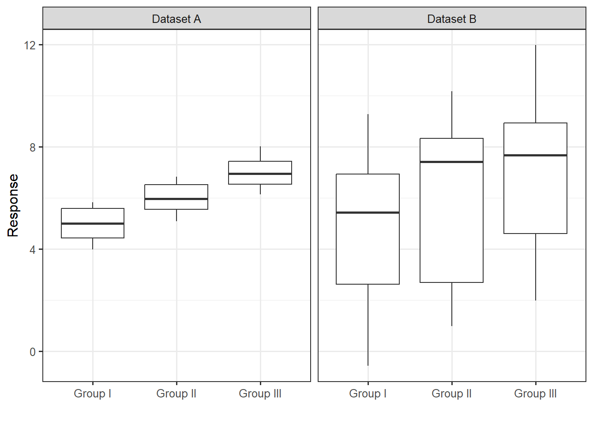
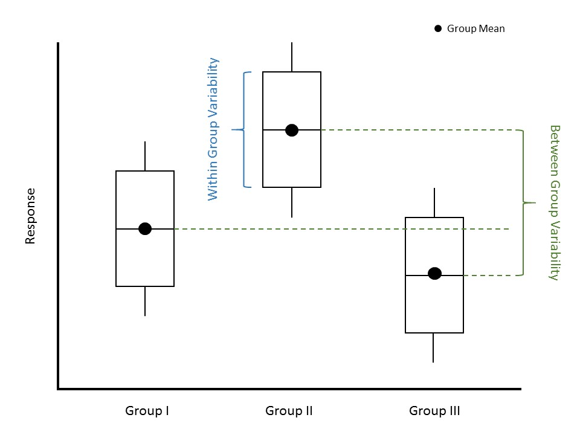

29 Quantifying the Evidence
In the previous two chapters, we described a model for describing the data generating process for a quantitative response as a function of a single categorical predictor:
\[(\text{Response})_i = \sum_{j = 1}^{k} \mu_j (\text{Group } j)_i + \varepsilon_i\]
where
\[(\text{Group } j)_i = \begin{cases} 1 & \text{i-th unit belongs to group } j \\ 0 & \text{otherwise} \end{cases}\]
is an indicator variable.
Chapter 27 discussed obtaining estimates of these unknown parameters using the method of least squares. Chapter 28 imposed conditions on the stochastic portion of the model in order to develop a confidence interval for each parameter. In this chapter, we turn to performing inference through the computation of a p-value for a set of hypotheses. As we saw with regression models in Chapter 19, this is accomplished through partitioning variability.
Figure 29.1 displays a numeric response across three groups for two different datasets. Consider the following question:
For which dataset is there stronger evidence that the response is associated with the grouping variable?
Nearly everyone would say that Dataset A provides stronger evidence of a relationship between the grouping variable and the response. We generated these data such that the mean for Groups I, II and III are 5, 6 and 7, respectively, for both Datasets A and B. While there is a difference, on average, in the response across the groups in both cases, it is correct that Dataset A provides stronger evidence for that relationship. The real question is “what is it that leads everyone to make the same conclusion when we have not yet discussed how to analyze this data?” When we ask students why they feel Dataset A provides stronger evidence, we typically hear that it is because the “gaps” between the groups “look bigger.” Exactly!
29.1 Partitioning Variability
Subconsciously, when we are deciding whether there is a difference in the average response between the groups, we are partitioning the variability in the response. We are essentially describing two sources of variability: the variability in the response caused by subjects belonging to different groups and the variability in the response within a group (Figure 29.2). In both Datasets A and B from Figure 29.1, the between-group variability is the same; the difference in the means from one group to another is the same for both datasets. However, the within-group variability is much smaller for Dataset A compared to Dataset B.

Definition 29.1 (Between Group Variability) When comparing a quantitative response across groups, the between group variability is the variability in the average response from one group to another.
Definition 29.2 (Within Group Variability) When comparing a quantitative response across groups, the within group variability is the variability in the response within each group.
The power of Figure 29.1 is that it allows us to examine the between group variability (how the average responses differ from one another) relative to the within group variability (how the responses within a group differ from one another). What we see is that the larger this ratio, the stronger the signal. Quantifying the strength of a signal is then about quantifying the ratio of these two sources of variability. Let this sink in because it is completely counterintuitive. We are saying that in order to determine if there is a difference in the mean response across groups, we have to examine variability. Further, a signal in data is measured by the variability it produces. It is for this reason that comparing a quantitative response across a categorical variable is termed ANalysis Of VAriance (ANOVA).
Big Idea
Consider the ratio of the variability between groups to the variability within groups. The larger this ratio, the stronger the evidence of a signal provided by the data.
This partitioning is a bit easier to visualize here than it was for the simple linear regression model, but the process is actually exactly the same.
29.2 Forming a Standardized Test Statistic
Let’s return to our model for the moral expectation score as a function of the food exposure group given in Equation 27.1:
\[(\text{Moral Expectations})_i = \mu_1 (\text{Comfort})_i + \mu_2 (\text{Control})_i + \mu_3 (\text{Organic})_i + \varepsilon_i,\]
where we use the same indicator variables defined in Chapter 27. We were interested in the following research question:
Does the average moral expectation score differ for at least one of the three food exposure groups?
This was captured by the following hypotheses:
\(H_0: \mu_1 = \mu_2 = \mu_3\)
\(H_1: \text{at least one } \mu_j \text{ differs}.\)
As we stated above, quantifying the strength of a signal is equivalent to quantifying the ratio of two sources of variability. This ratio will form our standardized statistic. Our model acknowledges these two sources of variability; the question we then have before us is the following: how do we measure these sources of variability?
As with the linear regression model, we want to move forward with a goal of trying to say something like
\[\begin{pmatrix} \text{Total Variability} \\ \text{in the Moral Expectations} \end{pmatrix} = \begin{pmatrix} \text{Variability due} \\ \text{to Food Exposure} \end{pmatrix} + \begin{pmatrix} \text{Variability due} \\ \text{to Noise} \end{pmatrix}\]
As we have seen in Chapter 5, Chapter 12, and in Chapter 19, variability can be quantified through considering the “total” distance the observations are from a common target (for example, the mean response) where “distance” is captured by squared deviations. That is, the total variability in the moral expectation score can be measured by
\[\sum_{i=1}^{n} \left[(\text{Moral Expectation})_i - (\text{Overall Mean Moral Expectation})\right]^2. \tag{29.1}\]
Notice this quantity is related to, but is not equivalent to, the sample variance. It measures the distance each response is from the sample mean and then adds these distances up. This Total Sum of Squares is exactly the same as we developed for the regression model (Definition 19.1):
29.3 Total Sum of Squares
The Total Sum of Squares, abbreviated SST, is given by
\[SST = \sum_{i=1}^{n} \left[(\text{Response})_i - (\text{Overall Average Response})_i\right]^2\]
where the overall average response is the sample mean.
We now have a way of quantifying the total variability in the moral expectation scores we observed; we now want to partition (or separate) out this variability into its two components. In order to capture the variability due to the food exposure groups, we consider how it plays a role in the model for the data generating process: it allows participants from different groups to have a different mean response. That is, the deterministic portion of the model for the data generating process is the model’s attempt to explain how changes in the group explain changes in the moral expectation score. Finding the variability in the moral expectations due to the food exposure groups is then equivalent to finding the variability among these estimated (or predicted) mean responses:
\[\sum_{i=1}^{n} \left[(\text{Group Mean Moral Expectation})_i - (\text{Overall Mean Moral Expectation})\right]^2. \tag{29.2}\]
This term quantifies the variability explained by the groups, and it is called the Treatment Sum of Squares, but it is equivalent to the Regression Sum of Squares (Definition 19.2):
29.4 Regression Sum of Squares
The Regression Sum of Squares, abbreviated SSR, is given by
\[SSR = \sum_{i=1}^{n} \left[(\text{Predicted Mean Response})_i - (\text{Overall Mean Response})\right]^2\]
where the predicted mean response is computed using the least squares estimates and the overall mean response is the sample mean.
This is also known as the Treatment Sum of Squares (abbreviated SSTrt) in ANOVA.
We need to be careful here that the overall mean response is the sample mean across all groups, while the “predicted mean response” is the observed sample mean within each group.
Finally, the unexplained noise, \(\varepsilon\) in our model for the data generating process, is the difference between the actual response and the deterministic portion of the model (in our case, the true mean response in each group). This variability in the noise is then the variability within each group:
\[\sum_{i=1}^{n} \left[(\text{Moral Expectation})_i - (\text{Group Mean Moral Expectation})_i\right]^2.\] {eq-anovateststat-sse}
This Error Sum of Squares is exactly the same as we developed for the regression model (Definition 19.3):
29.5 Error Sum of Squares
The Error Sum of Squares, abbreviated SSE and sometimes referred to as the Residual Sum of Squares, is given by
\[SSE = \sum_{i=1}^{n} \left[(\text{Response})_i - (\text{Predicted Mean Response})_i\right]^2\]
where the predicted mean response is computed using the least squares estimates.
Again, the “predicted mean response” for ANOVA is the observed sample mean within each group.
Big Idea
The total variability in a response can be partitioned into two components: the variability explained by the predictor and the unexplained variability left in the error term. This is represented in the formula
\[SST = SSR + SSE\]
As we have seen repeatedly, hypothesis testing is really model comparison; that is, our hypotheses of interest comparing the means really suggest two separate models for the data generating process:
\[ \begin{aligned} \text{Model 1}:& \quad (\text{Moral Expectation})_i = \mu_1 (\text{Comfort})_i + \mu_2 (\text{Control})_i + \mu_3 (\text{Organic})_i + \varepsilon_i \\ \text{Model 0}:& \quad (\text{Moral Expectation})_i = \mu + \varepsilon_i, \end{aligned} \]
where \(\mu\) represents the common value of \(\mu_1, \mu_2, \mu_3\) under the null hypothesis (that is, the shared overall mean moral expectation score). The model under the null hypothesis (Model 0) has fewer parameters because it is a constrained version of Model 1 resulting from setting \(\mu_1 = \mu_2 = \mu_3\) (the common value of which we called \(\mu\)). In fact, while Model 1 says there are two components (food exposure group and noise) contributing to the variability observed in the moral expectations, Model 0 says that there is only a single component (noise).
Regardless of which model we choose, the total variability in the response remains the same. We are simply asking whether the variability explained by the food exposure group is sufficiently large for us to say it has an impact. In particular, if the null hypothesis were true, we would expect all the variability in the response to be channeled into the noise (\(SST \approx SSE\)). In fact, think about computing the error sum of squares for Model 0 above; it would be
\[SSE_0 = \sum_{i=1}^{n} \left[(\text{Moral Expectations})_i - (\text{Overall Mean Moral Expectation})\right]^2\]
since the least squares estimate of \(\mu\) in Model 0 is the sample mean (see Appendix B). But, this is equivalent to the total sum of squares for Model 1 (Equation 29.1). This confirms our intuition that if the null hypothesis were true, we would expect all the variability in the response to be channeled into the noise.
If, however, the alternative hypothesis is true and the food exposure group explains some portion of the variability in the moral expectations, then we would expect some of the variability to be channeled out of the noise term (\(SSR > 0\)). Because we have partitioned the variability, we now take a moment to recognize that
\[SSR = SST - SSE,\]
but we know that the total sum of squares is just the error sum of squares from the reduced model (Model 0) as shown above. Therefore, we can write
\[SSR = SSE_0 - SSE_1, \tag{29.3}\]
where we use the subscripts to denote whether we are discussing the error sum of squares from the reduced model (Model 0) or the full unconstrained model (Model 1). That is, Equation 19.4 reveals that the regression sum of squares is the equivalent of the shift in the error sum of squares as we move from the reduced model under the null hypothesis to the more complex model under the alternative hypothesis.
Big Idea
For a particular dataset, the regression sum of squares quantifies the shift in the error sum of squares as we move from a reduced model to a more complex model. It measures the “signal” in the data represented by the more complex model for the data generating process.
Just as we stated in Chapter 19, while sums of squares partition the variability, mean squares quantify the actual variance, and it turns out working with variances is beneficial. To move from a sum of squares to a mean square, we need to divide by the degrees of freedom (Definition 19.5).
29.6 Degrees of Freedom
A measure of the flexibility in a sum of squares term; when a sum of squares is divided by the corresponding degrees of freedom, the result is a variance term.
Definition 29.3 (Mean Square (in ANOVA)) A mean square is the ratio of a sum of squares and its corresponding degrees of freedom. For a model of the form in Equation 27.2, we have
- Mean Square Total (MST): estimated variance of the responses; this is the same as the sample variance of the response.
- Mean Square for Regression (MSR): estimated variance of the sample mean responses from each group; this is also called the Mean Square for Treatment (MSTrt) in ANOVA.
- Mean Square Error (MSE): estimated variance of the error terms; this is equivalent to the estimated variance of the response within a group.
In each case, the mean square is an estimated variance. These are equivalent to the MST, MSR, and MSE in the regression model (Definition 19.6).
The MSR quantifies the between group variability and the MSE quantifies the within group variability. The MSR is our signal. The larger this variance, the further apart the observed group sample means are from one another (providing evidence for the alternative hypothesis); the smaller this variance, the closer the observed group sample means are (consistent with the null hypothesis).
Degrees of Freedom for MSR (or MSTrt)
In an ANOVA model, the MSR is capturing the variability among \(k\) sample means; therefore, the associated degrees of freedom are \(k - 1\).
MSE provides a measure of the noise within the data. Again, in Figure 29.1, the variability between the means is identical for the two datasets; the signal is easier to discern for Dataset A because this variability is larger with respect to the noise.
Applicability of MSE
The MSE is a pooled estimate of the variance within a group. That is, it is a weighted average of the observed group sample variances. Therefore, interpreting this value only makes sense if we are willing to impose the constant-variance condition. However, regardless of whether we impose the constant-variance condition, the MSE is helpful in computing a standardized statistic.
Degrees of Freedom for MSE
In an ANOVA model, predicting the mean response requires estimating \(k\) parameters (the sample mean within each of the \(k\) groups); therefore, the associated degrees of freedom are \(n - k\).
We are now ready to define our standardized statistic as the ratio of mean squares:
\[\frac{MSR}{MSE} = \frac{\left(SST - SSE_1\right)/(k - 1)}{SSE_1 / (n - k)} = \frac{\left(SSE_0 - SSE_1\right)/(k - 1)}{SSE_1 / (n - k)},\]
where again we have added subscripts to emphasize from which model we are computing the above sums of squares. This standardized statistic could be used to quantify the signal-to-noise ratio (the amount of evidence) in the sample for testing the hypotheses
\(H_0: \mu_1 = \mu_2 = \mu_3\)
\(H_1: \text{At least one } \mu_j \text{ differs}\)
However, we can generalize this for testing a range of hypotheses within our model for the data generating process.
Definition 29.4 (Standardized Statistic for ANOVA) Consider testing a set of hypotheses for a model of the data generating process of the form (Equation 27.2):
\[(\text{Response})_i = \sum_{j=1}^{k} \mu_j(\text{Group } j)_i + \varepsilon_i,\]
where
\[(\text{Group } j)_i = \begin{cases} 1 & \text{i-th unit belongs to group } j \\ 0 & \text{otherwise} \end{cases}\]
is an indicator variable. Denote this model as Model 1, and denote the model that results from applying the parameter constraints defined under the null hypothesis as Model 0. A standardized statistic, sometimes called the “standardized F statistic,” for testing the hypotheses is given by
\[T^* = \frac{\left(SSE_0 - SSE_1\right) / (k - r)}{SSE_1 / (n - k)},\]
where \(k\) is the number of parameters in the full unconstrained model and \(r\) is the number of parameters in the reduced model. Defining
\[MSA = \frac{SSE_0 - SSE_1}{k - r}\]
to be the “mean square for additional terms,” which captures the shift in the error sum of squares from the reduced model to the full unconstrained model, we can write the standardized statistic as
\[T^* = \frac{MSA}{MSE}\]
where the mean square error in the denominator comes from the full unconstrained model. Just as before, the MSE represents the residual variance — the variance in the response for a particular set of the predictors.
It can be shown that this standardized statistic is a special case of the one discussed in Chapter 21 and is therefore consistent with the ones presented in Chapter 19 and Chapter 12. The numerator captures the signal by examining the difference between what we expect the error sum of squares to be under the null hypothesis and what we actually observe; the denominator captures the background noise (relative to the estimated mean response from the full model). Larger values of this standardized statistic indicate more evidence in the sample against the null hypothesis.
We should not lose sight of the fact that our standardized statistic is really a result of partitioning the variability and considering the variability explained by the factor of interest relative to the noise in the response. Underscoring that the standardized statistic is a result of this partitioning, the analyses of these sources of variability is often summarized in a table similar to that represented in Figure 19.3, which is called an “ANOVA table” (Figure 29.3).

This table is extremely familiar as we encountered it in Chapter 19. Just as before, the last entry in the table is the p-value. As with any p-value, it is computed by finding the likelihood, assuming the null hypothesis is true, of getting, by chance alone, a standardized statistic as extreme or more so than that observed in our sample. “More extreme” values of the statistic would be larger values; so, the area under the null distribution to the right of the observed statistic is the p-value.
We note that while mathematical formulas have been provided to add some clarity to those who think algebraically, our emphasis is not on the computational formulas as much as the idea that we are comparing two sources of variability.
Let’s return to the question that inspired our investigation in this chapter:
Does the average moral expectation score differ for at least one of the three food exposure groups?
This was captured by the following hypotheses:
\(H_0: \mu_1 = \mu_2 = \mu_3\)
\(H_1: \text{at least one } \mu_j \text{ differs}.\)
Table 29.1 gives the ANOVA table summarizing the partitioned sources of variability in the moral expectation score. We have a large p-value (computed assuming the data is consistent with the classical ANOVA model). That is, the sample provides no evidence to suggest the average moral expectation differs across any of the food exposure groups. The study suggests it is reasonable to assume that the foods we are exposed to do not impact our moral expectation, on average.
| Term | DF | Sum of Squares | Mean Square | Standardized Statistic | P-Value |
|---|---|---|---|---|---|
| Food Exposure Group | 2 | 0.562 | 0.281 | 0.406 | 0.667 |
| Error | 120 | 82.951 | 0.691 |
Big Idea
Determining if a response is related to a categorical predictor is done by determining if the predictor explains a significant portion of the variability in the response.
In this chapter, we partitioned variability as a way of evaluating the strength of evidence the predictor plays in determining the response. As with the linear regression model, partitioning the variability is a key step. By partitioning the variability in the response, we are able to construct a standardized statistic for testing the hypothesis of interest. The model for the null distribution of this statistic depends upon the conditions we are willing to impose on the stochastic portion of the data generating process. Regardless of the conditions we impose, we can interpret the resulting p-value similarly. It provides an indication of whether the data suggests that the average response differs for at least one of the groups.
Of course, the interpretation of the p-value depends on the conditions we impose. We should not choose such conditions without performing some type of assessment to ensure those conditions are reasonable — that the data is consistent with the conditions. That is the focus of the next chapter.